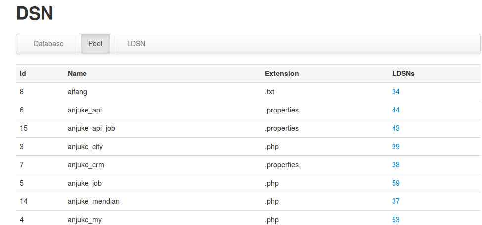

DCT使用说明
-
dct平台:http://dct.corp.anjuke.com
* dct:database config tool,主要用来统一管理我们所有的数据库配置,便于维护
-
什么情况需要提DCT需求?
* 对于我们新增的每一个job,使用的每一个数据库配置名都需要我们check,如果没有就需要提申请
* 对于app,如果不认真check数据库配置,只有希望在beta环境最早发现


DCT使用说明
-
提dct需求需要如下信息
* 放入哪个pool，可以在dct平台查看，例如anjuke_my,anjuke_city,anjuke_job这都是一个单独的一个pool
* 需要操作哪个数据库
* 读还是写
* 操作key的名称（在php中就是我们database.php中的config大数组的key，例如$config['master']=array()）
* 发邮件给兰春,Maple

DBRT需求规范
-
新建DBRT的过程中,Component必须选择 DB-RT，Enviroment必须是线上环境

-
DBRT需求至少CC给上级主管,如若不符合此规则,DBA有权拒回此需求
DBRT需求规范
-
DBRT需求内容必须符合DBRT规范(http://wiki.corp.anjuke.com/index.php?title=DBRT规范)
-
预计该表每天的数据写入量？
-
预计该表每天的数据查询次数？
-
该表是否用于关键页面（如anjuke.com访问量排名前三的页面）
-
是否有job在查询或更新这张表？
-
附上主要的读写SQL
-
建表语句必须要有自增主键
-
要有字段注释和表注释，表注释中标注建表人
-
预估新建表最终会稳定在多少数据量，对于会无限增长的表，预先给出数据清理方案
如何部署job
-
job平台地址:http://newjob.corp.anjuke.com,使用域帐号登陆
-
新增加一个job需要注意以下几个地方
- 关于环境的说明:php53_pay(支付中心专用) php53(php公用) java16_haopan(java好盘) java16_api(java api) java16_crm(java
crm) java16(java公用)
- job日志存放规则：日志统一存放在/data1/logs/ 严禁随意乱放
- 关于php执行job命令的说明
GA环境:/usr/bin/php /home/www/v2/jobs/launcher.php xxx
Beta环境：/usr/bin/php /home/www/v2/jobs/launcher_beta.php xxx
指定环境:/usr/bin/php /home/www/v2/jobs/launcher_version.php yyy xxx
-
关于launcher_version.php的使用方法
- 目前所有的job机器都已经有了launcher_version.php，在/home/www/v2/jobs/ 目录下面
- 使用方法如下
[evans@app10-067 jobs] $ /usr/bin/php home/www/v2/jobs/launcher_version.php
Usage: launcher_version.php {version} {php_file}
--version 2013_36_16
--php_file anjuke/5i5j.php(完整路劲是/home/www/release/v2/分支版本号/app-jobs/bin 下的文件路径)
举例如下：
如果我们要跑分支2013_37_02版本,/usr/bin/php /home/www/v2/jobs/launcher_version.php 2013_37_02
anjuke/360sitemap_community.php
- 关于job运行周期：对于常驻job，我们会默认设置为129600分钟（90天），因为我们会每90天进行一次job清理工作
如何部署job
-
job的报警规则说明
- 运行时间过短和过长的报警 如果运行时间小于 job填写运行时长的六分之一 或者 大于job填写时长的1.5倍 都会报警
- 数据库标记正在运行，但是在机器上找不到运行的进程
- 数据库表示没有运行，但是在机器上发现了进程
- 该运行未运行 在预订的运行时间没有运行起来
- job执行命令异常 代码问题

线上服务器基本结构
- 我们的代码一般放在/home/www/release/v2/xxx下面(xxx表示版本号，例如2013_37_09)
- 我们的入口文件和最外层配置：/home/www/v2/xxx (xxx可能是anjuke，jobs，mendian)中的index.php
- 查看v2框架的错误日志：/var/log/user.log
- 所有的日志文件必须放在：/data1/logs/


office如何连接线上数据库
DBA专门为我们提供了线上的slave,给PD在office查询线上数据、查看线上表 结构及索引、做select语句的性能评估
wiki地址：http://wiki.corp.anjuke.com/index.php?title=All,加入导航之家
请各位在以后成为新同学的Buddy的时候，不要忘记告诉他们
Git权限申请流程
域帐号登录git.corp.anjuke.com,账户设置->添加公钥(ssh-keygen),然后就可以对我们公司的Git为所欲为了

ideliver可以干什么
- ideliver:集成开发,测试,发布自动化保证软件稳定性
- 新同学使用ideliver需要开通对应的权限,否则无法进行项目相关的所有操作
-
开通权限需要以下信息
- 我们不需要姓名,身高,性别,喜好,是否有对象等等
- 我们需要邮箱,姓名,职位(开发或测试),邮件给周乐钦同学
Other Elements: Blockquotes
Food is an important part of a balanced diet.
Fran Lebowitz
<blockquote cite="http://example.org">
<p>Food is an important part of a balanced diet.</p>
<p><cite>Fran Lebowitz</cite></p>
</blockquote>
Digging Deeper
If you want to learn about making your own themes, extending deck.js, and more, check out the documentation.
←
→
/
#